KRK Panel
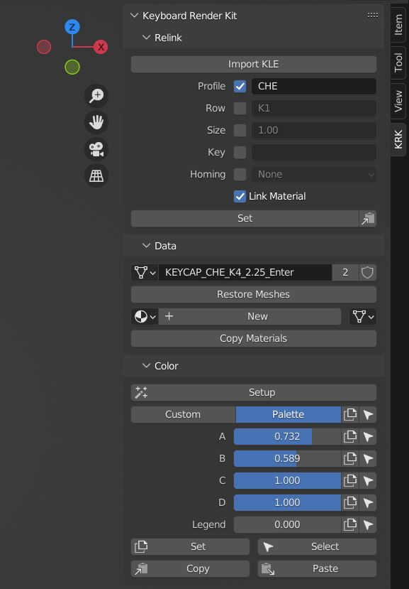
The KRK panel can be found in the sidebar (N) and is is separated into four sections: Relink, Data, Color and Properties. The last two are only visible when the relevant properties are available.
Relink
Relink is an object data manager designed to quickly swap between keycap profiles, rows, sizes, keys and homing options. Any option that has the checkbox enabled will be taken into account when you press the Set button.
Import KLE
KRK has the ability to import Keyboard Layout Editor JSON files. KLE doesn’t name its objects so the importer tries to interpret the keys based on the legend and the row (K1-K6) and sets a placeholder wheverver it can. Use this KLE as an example or as a basis to generate your own:
http://www.keyboard-layout-editor.com/#/gists/f7528ebe1348daab7abc45bc2f662c8a
Profile
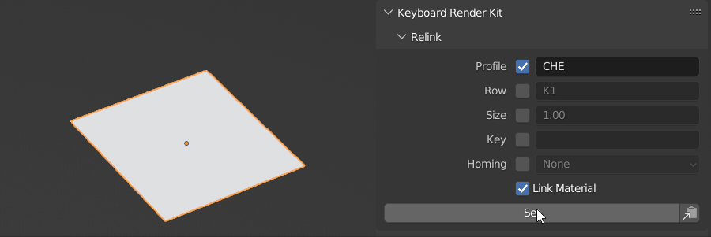
Available profiles and their prefixes are listed in the Profile collection in the outliner while rows and other options you will develop an intuition for. Type the option into the relevant field (case sensitive) with the checkbox enabled and press Set to set the option.
Row
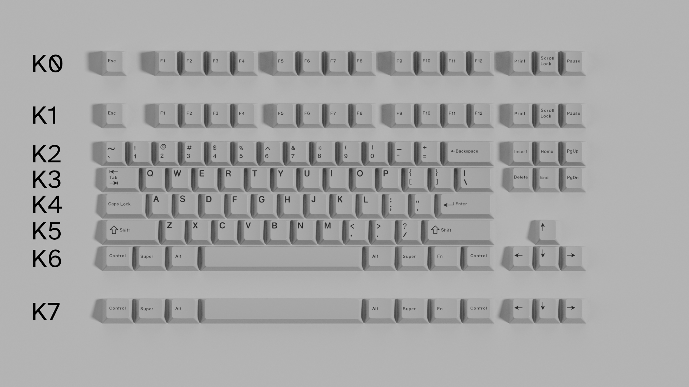
Due to the fact that different manufacturers and keycap profiles use different row numbering systems, KRK introduces yet another based on the actual position on the keyboard starting from the rear.
Profile |
Optional |
Rows |
Optional |
|---|---|---|---|
KRK |
0 |
1-2-3-4-5-6 |
7 |
Cherry |
0 |
1-1-2-3-4-4 |
5 |
DCS |
5 |
1-1-2-3-4-4 |
|
DSA |
Uniform |
||
DSS |
1-1-2-3-4-3 |
4 |
|
KAM |
Uniform |
||
KAT |
5 |
4-4-3-2-1-1 |
|
OEM |
1-1-2-3-4-4 |
||
SA |
1-1-2-3-4-3 |
4 |
Some profiles have an interchangeable first and/or last row.
(Uniform in the table means all rows have the same height; enter it as-is.)
Size
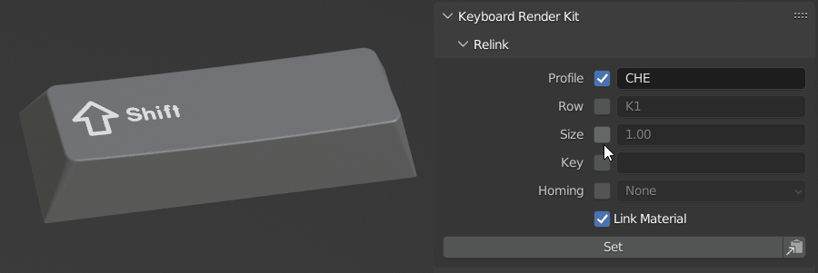
You can change the size of a keycap by typing the four character unit size into the field. If the destination geometry is available, it will change to the desired size.
Key
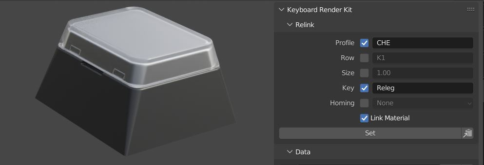
Type the keycap name into the field to change keycaps over to a different keycap. This is handy for changing to a relegendable (Releg), a blank keycap (Blank) or windowed (*_WIN).
Homing
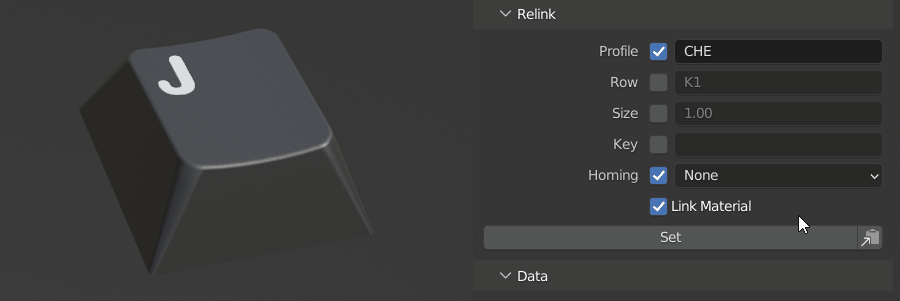
You can change the type of homing key between bar/nub/scoop by using this dropdown and clicking Set.
Link Material
Link Material is an option that allows you to carry over the current applied material to the destination object data. You may want to have this on or off depending on what the desired outcome is. For example, if you were swapping over to the placeholder profile (PLA) you will want the Link Material option turned off so the Capsmat isn’t carried over to the placeholders.
Copy Settings
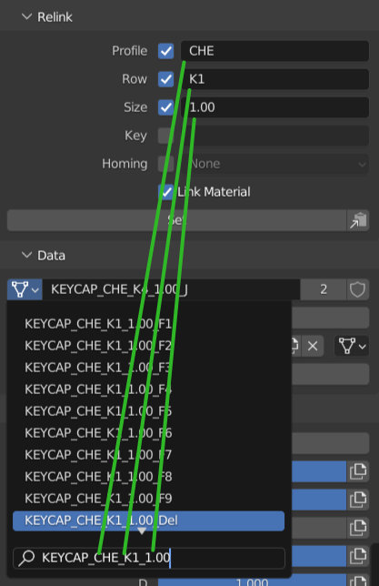
To the right side of the Set button is the Copy Settings button That helps you copy the object data name into the object data dropdown to aid in searching for a particular key.
The following sections will only display options for the active (highlighted) object.
Data
Data mirrors the object data and material assignment sections from the properties panel to make them more convenient to access.
Easily search through object data to replace the active object data with another. Eg. duplicate or instance a keycap and make the copy into a switch or stabilizer.
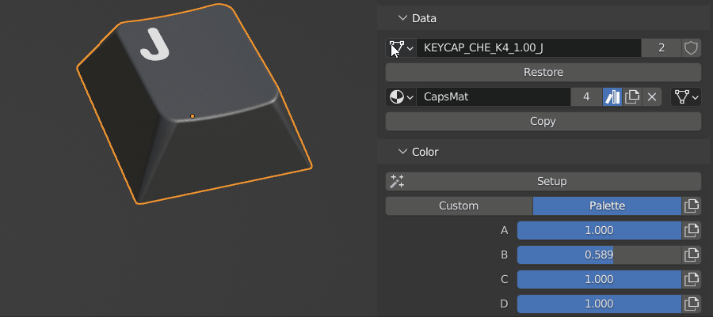
Restore Meshes can be used when a keycap is unable to be relinked because it was duplicated, imported or pasted. What it does is reconnects it with the similarly named version that is already in the file. If you would like to use the imported one as the base then rename its object data to not have .001 at the end.
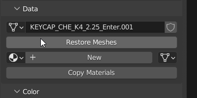
Restore Collections only appears when you have a collection asset selected. This allows you restore it to an editable state.
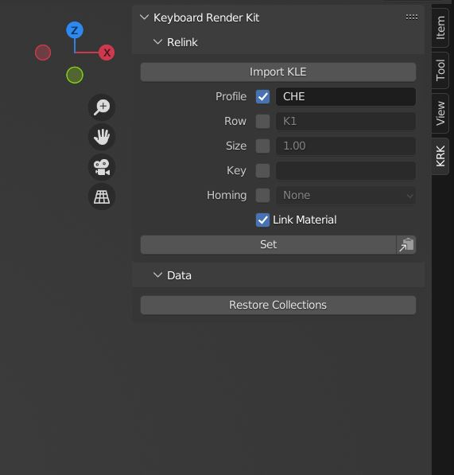
The Copy button here links the material from the active keycap object to all of the other selected keycaps while ingnoring non-keycap objects.
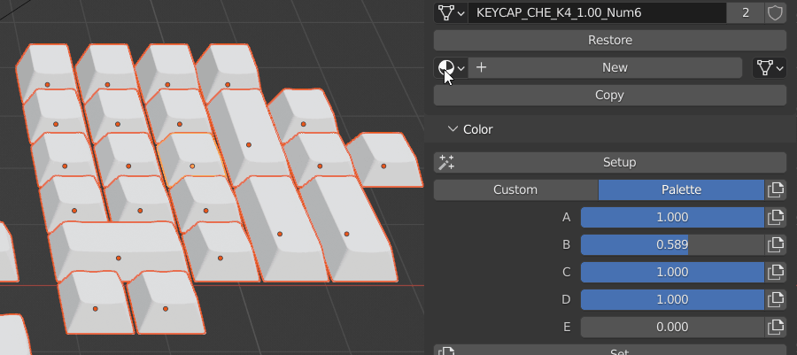
Color
Color is a color and palette management system to help you control the color aspects of your Capsmat. It will only display when there are color properties available. If you have a keycap selected that does not hold color properties, the Setup button will be available to apply all the necessary properties to the keycap object.
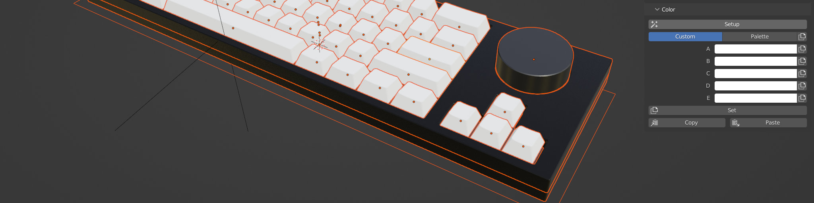
The Custom/Palette switcher allows you to switch between the custom color and palette workflows. Colors A-E and Palette sliders A-E allow you to control those aspects of the Capsmat on a per object basis through the palette node groups. Choose your options and press Set to propagate them to all of the selected keycap objects or press the individual copy buttons to limit it to one option at a time. Copy and Paste buttons are at the bottom to create and recall an index of options for all of the selected objects.
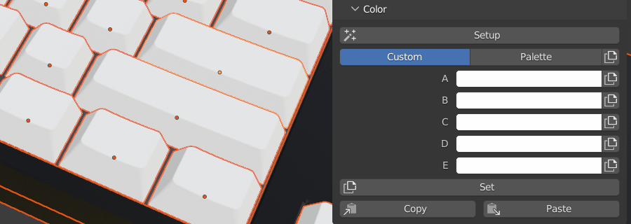
Properties
Properties is also only visible when custom properties are available. For the USB cables, it displays the cable options such as braid/techflex and heatshrink color for the heads. If the deskmat is selected, it will display the dimension and edging options instead.
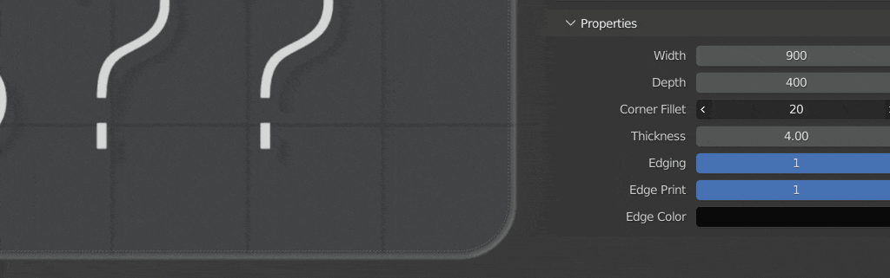